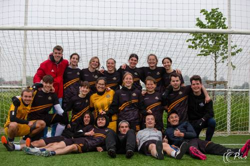
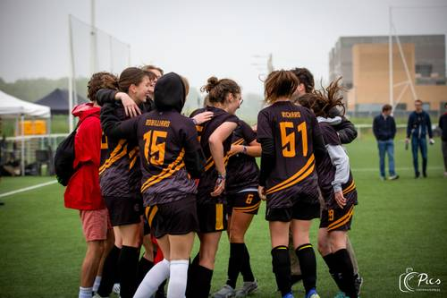

<div class="presentation">
  <div class="informations">
    <h1 class="titre">Les évents de l'année</h1>
    <p class="description">L’année 2022-2023 a été très chargée en termes d’évènements pour l’Etoile de Vinci. Entre voyages à l’étranger et tournois nationaux voici une liste des résultats obtenus par nos équipes lors des principaux évènements auxquels nous avons participé :</p><br/>
    <div class="container">
      <div class="informations">
        <h1 class="soustitre1">Le TOSS (FOOT à 8)</h1>
        <p class="event">En 2023, l'équipe masculine a été éliminée en quart de finales et l'équipe féminine s’est inclinée en petite finale après être sortie première de sa poule. C’est une amélioration par rapport à 2022 où nos équipes étaient allées respectivement jusqu’en 8ème et quart de finale.</p>
      </div>
      
    </div>
    <h1 class="soustitre">La 7ème world inter-univerisities championship à BARCELONE</h1>
    <p class="event">Notre équipe féminine a réussi à se hisser en quart de finale pour la deuxième année consécutive en futsal après l’édition de Rome en 2021.</p><br/>

    <div class="container">
      
      <div class="informations2">
        <h1 class="soustitre">Le SIXTE</h1>
        <p class="event">Les garçons de l’Etoile de Vinci se sont hissés jusqu’en 8ème de finale tandis que les filles ont réussi à aller jusqu’en petite finale après avoir été éliminées lors des tirs au but lors des demis.</p>
        <h1 class="soustitre">Le GOST</h1>
        <p class="event">La phase de poule a été compliquée pour notre équipe féminine mais elles ont gagné la consolante par la suite !</p>
      </div>

    </div>

  </div>
</div>
